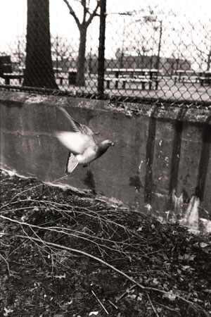

Laurent Chevalier
Interstice
April 4-May 13
In conjunction with the production of Dutch Masters presented by Partial Comfort Productions in association with Wild Project, in the gallery we are pleased to present “Interstice” by Laurent B. Chevalier.
This collection of images explores the definition of space between factors in identity. Individuals are subject to the limitations and expectations placed on upon them both externally and internally. It is in the spaces between those factors that an individual defines themselves and others. Interstice considers the weight that we place on our expectations, and the malleability of interpretation depending on the individual’s understanding.
Laurent Chevalier is a contemporary, New York-based photographer who distills everyday moments into complex perspectives on Black America.
Blurring the boundaries between street, documentary, and conceptual photography, Chevalier uncovers the beauty and significance in candid, daily scenes. His images examine the established history of photography—reclaiming it to highlight the infinite expressions of Blackness across backgrounds and generations. Through intimate portraits, city landscapes, and explorations in identity, the artist injects meaningful nuance into the American conversation about representation and social justice.
Chevalier captures the details of life, encouraging the viewer to constantly observe and question.
|